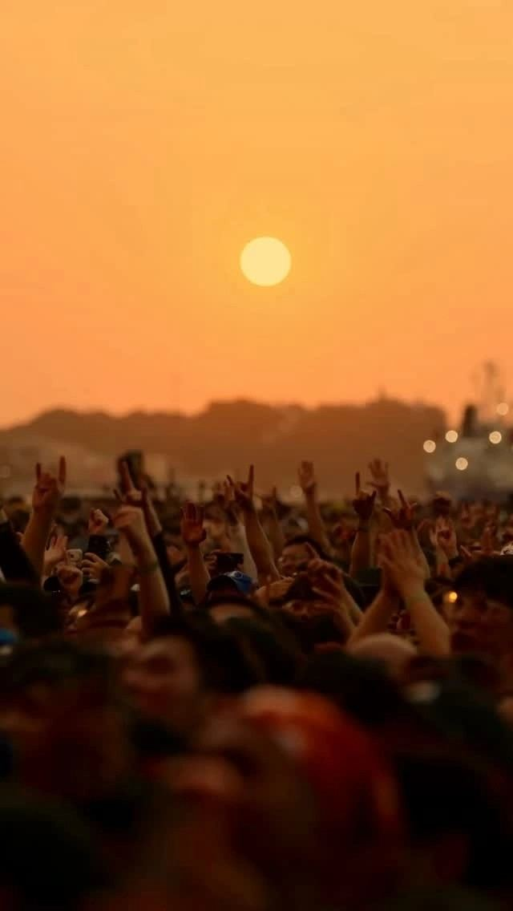

Festivals · Music
Megaport Festival 2027 (大港開唱)
- Dates
- –
- Venue
- The Pier-2 Art Center (駁二藝術特區), Kaohsiung
- Location
- Kaohsiung, Taiwan
- Format
- In-person
- Category
- Music
- Industry
- Music festival
- Organiser
- Megaport Festival
- Official website
- https://megaportfest.com/news/
About
Dates are local to the host city (Taiwan time, UTC+8).
Topics: rock, indie, hip-hop, live music.
No organiser attendance figure found on the official pages fetched 24 Nov 2026. Ranked by our estimated size tier 'large' (30,000-100,000 attendees/visits), a judgement from format, venue and scale, not an official number.
Sources
- Official — https://megaportfest.com/news/